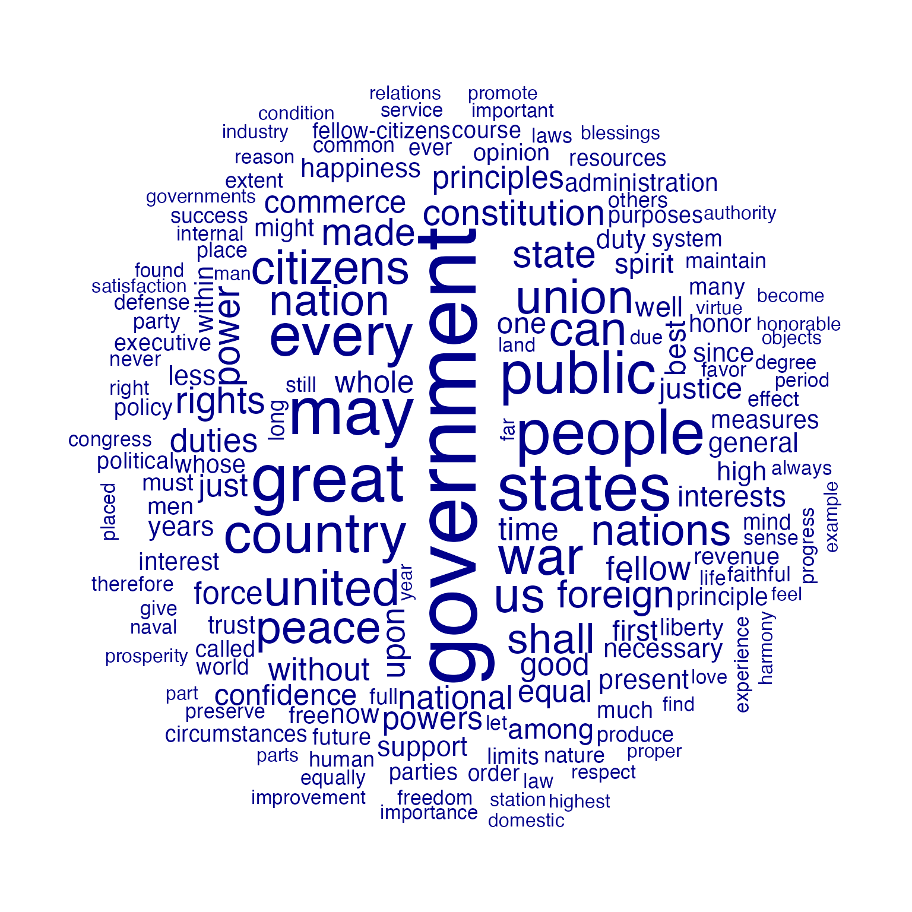

Example: textual data visualization
Kenneth Benoit, Stefan Müller, and Adam Obeng
Source:vignettes/pkgdown/examples/plotting.Rmd
plotting.Rmd
library("quanteda")
library("quanteda.textplots")This vignette walks through various plot options available in
quanteda.textplots through the textplot_*
functions.
Wordcloud
The frequency of features can be plotted as a wordcloud using
textplot_wordcloud().
dfmat_inaug <- corpus_subset(data_corpus_inaugural, Year <= 1826) |>
tokens(remove_punct = TRUE) |>
tokens_remove(pattern = stopwords('english')) |>
dfm() |>
dfm_trim(min_termfreq = 10, verbose = FALSE)
set.seed(100)
textplot_wordcloud(dfmat_inaug)
You can also plot a “comparison cloud”, but this can only be done with fewer than eight documents:
corpus_subset(data_corpus_inaugural,
President %in% c("Washington", "Jefferson", "Madison")) |>
tokens(remove_punct = TRUE) |>
tokens_remove(stopwords("english")) |>
dfm() |>
dfm_group(groups = President) |>
dfm_trim(min_termfreq = 5, verbose = FALSE) |>
textplot_wordcloud(comparison = TRUE)Plot will pass through additional arguments to the underlying call to
wordcloud.
textplot_wordcloud(dfmat_inaug, min_count = 10,
color = c('red', 'pink', 'green', 'purple', 'orange', 'blue'))
Lexical dispersion plot
Plotting a kwic object produces a lexical dispersion
plot which allows us to visualize the occurrences of particular terms
throughout the text. We call these “x-ray” plots due to their similarity
to the data produced by Amazon’s
“x-ray” feature for Kindle books.
toks_corpus_inaugural_subset <-
corpus_subset(data_corpus_inaugural, Year > 1949) |>
tokens()
kwic(toks_corpus_inaugural_subset, pattern = "american") |>
textplot_xray()
You can also pass multiple kwic objects to plot to
compare the dispersion of different terms:
textplot_xray(
kwic(toks_corpus_inaugural_subset, pattern = "american"),
kwic(toks_corpus_inaugural_subset, pattern = "people"),
kwic(toks_corpus_inaugural_subset, pattern = "communist")
)
If you’re only plotting a single document, but with multiple keywords, then the keywords are displayed one below the other rather than side-by-side.
## Loading required package: readtext## Warning: package 'readtext' was built under R version 4.4.1##
## Attaching package: 'readtext'## The following object is masked from 'package:quanteda':
##
## texts
data_char_mobydick <- as.character(readtext("http://www.gutenberg.org/cache/epub/2701/pg2701.txt"))
names(data_char_mobydick) <- "Moby Dick"
textplot_xray(
kwic(tokens(data_char_mobydick), pattern = "whale"),
kwic(tokens(data_char_mobydick), pattern = "ahab")
) ## Warning: Use of `x$ntokens` is discouraged.
## ℹ Use `ntokens` instead.
You might also have noticed that the x-axis scale is the absolute token index for single texts and relative token index when multiple texts are being compared. If you prefer, you can specify that you want an absolute scale:
textplot_xray(
kwic(toks_corpus_inaugural_subset, pattern = "american"),
kwic(toks_corpus_inaugural_subset, pattern = "people"),
kwic(toks_corpus_inaugural_subset, pattern = "communist"),
scale = "absolute"
)## Warning: Use of `x$ntokens` is discouraged.
## ℹ Use `ntokens` instead.
In this case, the texts may not have the same length, so the tokens that don’t exist in a particular text are shaded in grey.
Modifying lexical dispersion plots
The object returned is a ggplot object, which can be modified using ggplot:
library("ggplot2")
theme_set(theme_bw())
g <- textplot_xray(
kwic(toks_corpus_inaugural_subset, pattern = "american"),
kwic(toks_corpus_inaugural_subset, pattern = "people"),
kwic(toks_corpus_inaugural_subset, pattern = "communist")
)
g + aes(color = keyword) +
scale_color_manual(values = c("blue", "red", "green")) +
theme(legend.position = "none")
Frequency plots
You can plot the frequency of the top features in a text using
topfeatures.
library("quanteda.textstats")
tstat_freq_inaug <- textstat_frequency(dfmat_inaug, n = 100)
ggplot(tstat_freq_inaug, aes(x = frequency, y = reorder(feature, frequency))) +
geom_point() +
labs(x = "Frequency", y = "Feature")
If you wanted to compare the frequency of a single term across
different texts, you can also use textstat_frequency, group
the frequency by speech and extract the term.
# Create document-level variable with year and president
# Get frequency grouped by president
freq_grouped <- textstat_frequency(dfm(toks_corpus_inaugural_subset),
groups = President)
# Filter the term "american"
freq_american <- subset(freq_grouped, freq_grouped$feature %in% "american")
ggplot(freq_american, aes(x = frequency, y = group)) +
geom_point() +
scale_x_continuous(limits = c(0, 14), breaks = c(seq(0, 14, 2))) +
labs(x = "Frequency", y = NULL,
title = 'Frequency of "american"')
The above plots are raw frequency plots. For relative frequency plots, (word count divided by the length of the chapter) we need to weight the document-frequency matrix first. To obtain expected word frequency per 100 words, we multiply by 100.
dfm_rel_freq <- dfm_weight(dfm(toks_corpus_inaugural_subset), scheme = "prop") * 100
head(dfm_rel_freq)## Document-feature matrix of: 6 documents, 4,346 features (85.57% sparse) and 4 docvars.
## features
## docs my friends , before i
## 1953-Eisenhower 0.14582574 0.14582574 4.593511 0.1822822 0.10936930
## 1957-Eisenhower 0.20975354 0.10487677 6.345045 0.1573152 0.05243838
## 1961-Kennedy 0.19467878 0.06489293 5.451006 0.1297859 0.32446463
## 1965-Johnson 0.17543860 0.05847953 5.555556 0.2339181 0.87719298
## 1969-Nixon 0.28973510 0 5.546358 0.1241722 0.86920530
## 1973-Nixon 0.05012531 0.05012531 4.812030 0.2005013 0.60150376
## features
## docs begin the expression of those
## 1953-Eisenhower 0.03645643 6.234050 0.03645643 5.176814 0.1458257
## 1957-Eisenhower 0 5.977976 0 5.034085 0.1573152
## 1961-Kennedy 0.19467878 5.580792 0 4.218040 0.4542505
## 1965-Johnson 0 4.502924 0 3.333333 0.1754386
## 1969-Nixon 0 5.629139 0 3.890728 0.4552980
## 1973-Nixon 0 4.160401 0 3.408521 0.3007519
## [ reached max_nfeat ... 4,336 more features ]
rel_freq <- textstat_frequency(dfm_rel_freq, groups = dfm_rel_freq$President)
# Filter the term "american"
rel_freq_american <- subset(rel_freq, feature %in% "american")
ggplot(rel_freq_american, aes(x = group, y = frequency)) +
geom_point() +
scale_y_continuous(limits = c(0, 0.7), breaks = c(seq(0, 0.7, 0.1))) +
xlab(NULL) +
ylab("Relative frequency") +
theme(axis.text.x = element_text(angle = 90, hjust = 1))
Finally, texstat_frequency allows to plot the most
frequent words in terms of relative frequency by group.
dfmat_weight_pres <- data_corpus_inaugural |>
corpus_subset(Year > 2000) |>
tokens(remove_punct = TRUE) |>
tokens_remove(stopwords("english")) |>
dfm() |>
dfm_weight(scheme = "prop")
# Calculate relative frequency by president
dat_freq_weight <- textstat_frequency(dfmat_weight_pres, n = 10,
groups = President)
ggplot(data = dat_freq_weight, aes(x = nrow(dat_freq_weight):1, y = frequency)) +
geom_point() +
facet_wrap(~ group, scales = "free") +
coord_flip() +
scale_x_continuous(breaks = nrow(dat_freq_weight):1,
labels = dat_freq_weight$feature) +
labs(x = NULL, y = "Relative frequency")Plot “keyness” in a target and reference group
If you want to compare the differential associations of keywords in a
target and reference group, you can calculate “keyness” which is based
on textstat_keyness. In this example, we compare the
inaugural speech by Donald Trump with the speeches by Barack Obama.
# Only select speeches by Obama and Trump
corp_pres <- corpus_subset(data_corpus_inaugural,
President %in% c("Obama", "Trump"))
# Create a dfm grouped by president
dfmat_pres <- tokens(corp_pres, remove_punct = TRUE) |>
tokens_remove(stopwords("english")) |>
tokens_group(groups = President) |>
dfm()
# Calculate keyness and determine Trump as target group
tstat_keyness <- textstat_keyness(dfmat_pres, target = "Trump")
# Plot estimated word keyness
textplot_keyness(tstat_keyness) 
# Plot without the reference text (in this case Obama)
textplot_keyness(tstat_keyness, show_reference = FALSE)
Plot fitted scaling models
You can also plot fitted Wordscores (Laver et al., 2003) or Wordfish scaling models (Slapin and Proksch, 2008).
Wordscores
Wordscores is a scaling procedure for estimating policy positions or scores (Laver et al., 2003). Known scores are assigned to so called reference texts in order to infer the positions of new documents (“virgin texts”). You can plot the position of words (features) against the logged term frequency, or the position of the documents.
## Warning: package 'quanteda.textmodels' was built under R version 4.4.1
# Transform corpus to dfm
dfmat_ie <- data_corpus_irishbudget2010 |>
tokens() |>
dfm()
# Set reference scores
refscores <- c(rep(NA, 4), 1, -1, rep(NA, 8))
# Predict Wordscores model
tmod_ws <- textmodel_wordscores(dfmat_ie, y = refscores, smooth = 1)
# Plot estimated word positions (highlight words and print them in red)
textplot_scale1d(tmod_ws,
highlighted = c("minister", "have", "our", "budget"),
highlighted_color = "red")
# Get predictions
pred_ws <- predict(tmod_ws, se.fit = TRUE)
# Plot estimated document positions and group by "party" variable
textplot_scale1d(pred_ws, margin = "documents",
groups = data_corpus_irishbudget2010$party)
# Plot estimated document positions using the LBG transformation and group by "party" variable
pred_lbg <- predict(tmod_ws, se.fit = TRUE, rescaling = "lbg")
textplot_scale1d(pred_lbg, margin = "documents",
groups = data_corpus_irishbudget2010$party)Wordfish
Wordfish is a Poisson scaling model that estimates one-dimension document positions using maximum likelihood (Slapin and Proksch, 2008). Both the estimated position of words and the positions of the documents can be plotted.
# Estimate Wordfish model
library("quanteda.textmodels")
tmod_wf <- textmodel_wordfish(dfmat_ie, dir = c(6, 5))
# Plot estimated word positions
textplot_scale1d(tmod_wf, margin = "features",
highlighted = c("government", "global", "children",
"bank", "economy", "the", "citizenship",
"productivity", "deficit"),
highlighted_color = "red")
# Plot estimated document positions
textplot_scale1d(tmod_wf, groups = data_corpus_irishbudget2010$party)Correspondence Analysis
You can also plot the estimated document positions of a correspodence analysis (Nenadic and Greenacre 2007).
# Run correspondence analysis on dfm
tmod_ca <- textmodel_ca(dfmat_ie)
# Plot estimated positions and group by party
textplot_scale1d(tmod_ca, margin = "documents",
groups = data_corpus_irishbudget2010$party)
References
Laver, Michael, Kenneth Benoit, and John Garry. 2003. “Extracting Policy Positions from Political Texts Using Words as Data.” American Political Science Review 97(2): 311-331.
Nenadic, Oleg and Michael Greenacre. 2007. “Correspondence analysis in R, with two- and three-dimensional graphics: The ca package.” Journal of Statistical Software 20(3): 1–13.
Slapin, Jonathan and Sven-Oliver Proksch. 2008. “A Scaling Model for Estimating Time-Series Party Positions from Texts.” American Journal of Political Science 52(3): 705–772.